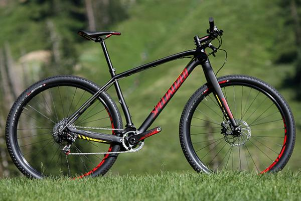

Всё о велосипедах
Под этим пунктом в характеристиках велосипеда имеется ввиду тип амортизации. Данных типов всего три.
Ригид (Rigid) – стандартная классическая схема, которая появилась еще на самых первых двухколесных транспортных средствах. Она подразумевает в себе конструкцию велосипеда с полным отсутствием амортизации, исключением может быть амортизированное седло с пружинами и амортизированный подседельный штырь. На велосипедах ригид устанавливается жесткая передняя вилка. По данной схеме выполняются все шоссейные велосипеды, дорожные, некоторые городские, круизеры и фэт-байки, а также BMX и т.д.
К преимуществам такой схемы можно отнести жесткость конструкции, что позволяет осуществлять более эффективное педалирование за счет отсутствия раскачки велосипеда. Плюс к этому велосипеды rigid обычно легче конкурентов с амортизаторами. Ну а недостаток – дискомфорт во время езды по ухабистой дороге.
Хардтеил (Hardtail) – схема амортизации велосипеда, при которой последний, имеет амортизационную переднюю вилку и жесткий хвостовик. Такая схема очень популярна и может встречаться практически на каждом из типов велосипедов (кроме шоссеров).
К преимуществам можно отнести более комфортную езду по ухабистым дорогам, чем у схемы ригид, за счет снижения вибрации, которая передается на руки велосипедиста от руля. Недостатки – менее эффективное педалирование (если вилка имеет блокировку хода, то этот недостаток можно не считать) и увеличение веса за счет более тяжелой амортизационной вилки.
Двухподвес – велосипед, который имеет два амортизатора, спереди и сзади. Передний реализован также как и на хардтейлах, а задний представляет собой, обычно, вид маятника (смотри картинку).
Такая схема амортизации используется как на обычных горных велосипедах, так и на специализированных, которые используются для даунхилла./p>
Плюсы – комфортная езда и снижение нагрузки на позвоночник при прыжках. Минусы такие же, как и у хардтейлов, только еще более выражены.